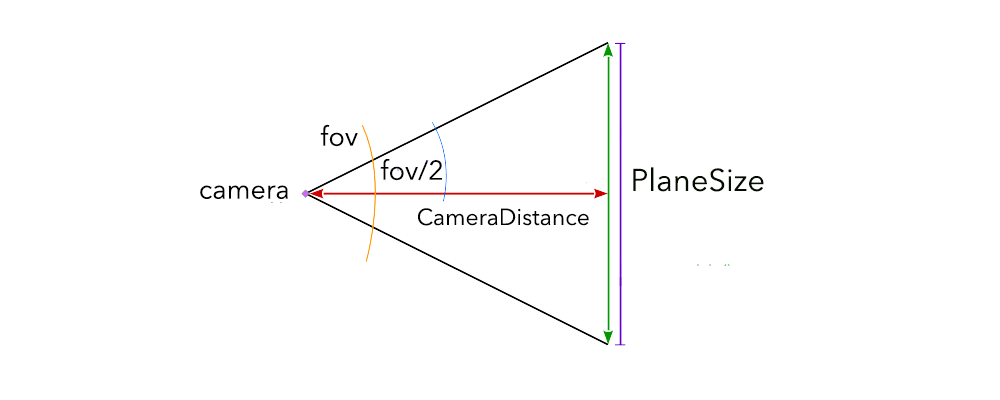
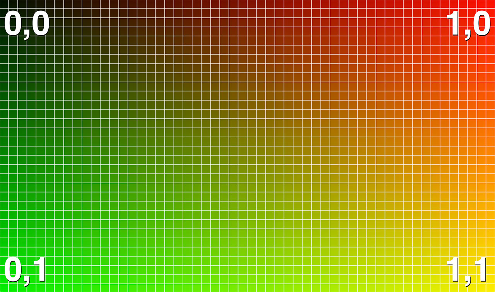
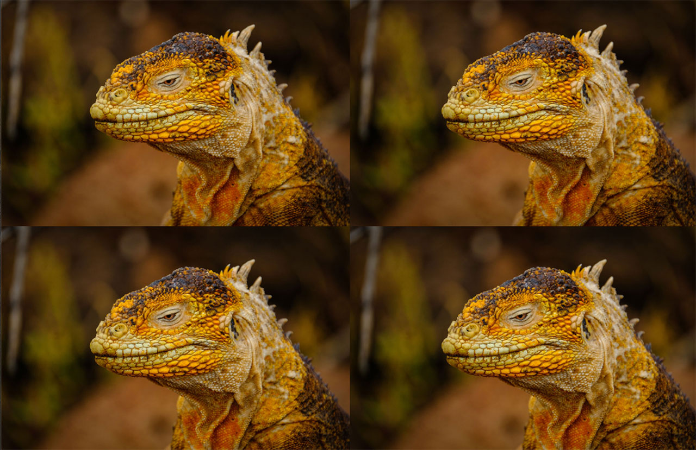

Everybody loves images. They are bright, colorful, they might be dog, cat, or a person. Even text sometimes strives to be an image.
|\_/|
| @ @ Woof!
| <> _
| _/\------____ ((| |))
| `--' |
____|_ ___| |___.'
/_/_____/____/_______|
But once you have more than one image, you can't help making a transition between them. Or is it just me? 🤔
Jokes aside, image transitions are all over the web. They can be animated with CSS, SVG, WebGL. But of course, the most efficient way to work with graphics in the browser – is using Graphics Processor, or GPU. And the the best way to do this is WebGL, with shaders written in GLSL.
I will be using THREE.js framework for my transitions. It doesnt really matter what library to use, it could have been amazing Pixi.js, or simple (but not so straightforward) native WebGL. I've used native WebGL in my previous tutorial, so this time i will try THREE.js. It also seems most beginner friendly to me. So dont blame me for overhead size.
Three.js uses concepts of Camera, Scene and Objects. We will create a simple Plane object, add it to Scene and put it in front of Camera, so that it is the only thing that you can see. There is a template for that kind of object PlaneBufferGeometry:
To cover the whole screen with a plane you need a little bit of geometry. Camera has a fov(field of view), and plane has a size. So with some calculations you can get it to fill your whole screen:
camera.fov = 2*(180/Math.PI)*Math.atan(PlaneSize/(2*CameraDistance));
Looks complicated, but its just getting the angle(fov), knowing all the distances here:
That is actually the end of 3D part, everything else will be happening in 2D.
In case you are not yet familiar with this language i highly advise you to check out wonderful Book Of Shaders.
So, we have a plane and we have a fragment shader attached to it, that calculates each pixels color.
How do we make a transition? The simplest one done with shader looks like this:
void main() {
vec4 image1 = texture2D(texture1,uv);
vec4 image2 = texture2D(texture2,uv);
gl_FragColor = mix(image1, image2, progress);
}
Where progress, is some number between 0 and 1, indicating progress of animation.
With that kind code you will get the simplest fade transition between images. But that's not that cool, right?
Usually all transitions are based on changing so called UVs, or the way texture is wrapped on plane. So for instance multiplying UV: scales the image. Adding some number: just shifts image on a plane.
UVs are nothing magical, think of it as a coordinate system for pixels on a plane:
Let's start with a basic code:
gl_FragColor = texture2D(texture,uv);
Which just shows an image on a screen. Now what if we change that a bit:
gl_FragColor = texture2D(texture,fract(uv + uv));
By taking fractional part, we make sure, all the values stay within 0-1 range. And if UV was from 0 to 1, doubled it is from 0 to 2, so we should see fractional part chaning from 0 to 1, and from 0 to 1 again!
And thats what you get, repeated image. Now lets try something different, substracting UV and using progress for animation:
gl_FragColor = texture2D(texture, uv - uv * vec2(1.,0) * progress * 0.5);
First, we make sure we are only chaning one axis of UV, by multplying it with vec2(1.,0). So when progress is 0, it should be default image, let's see:
So now we can stretch the image!
Now let's combine those two effects into one.
gl_FragColor = texture2D(uTextureOne, uv - fract(uv * vec2(5.,0.)) * progress * 0.1 );
So basically, we do stretching repeated 5 times now. And we could use any number instead of 5.
Much better! Now if we add another image, we could get one of my demos!
Cool isnt it? Just two simple arithmetic operations, and you have a cool transition effect.
That's just one way of changing UVs, check out all the other demos, and try to guess whats the math behind them! And try to come up with your own unique animation, share it with me! And have a nice day =).
-----------------------------------------------------------------------------